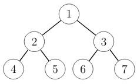

Binääripuun toteutus (Python)
Miten binääripuu toteutetaan käytännössä Pythonilla? Seuraavassa on yksi hyvä toteutustapa, joka on käytössä tämän viikon tehtävissä.
Tyyppi Node
Pythonissa kätevä tapa tallentaa binääripuun solmun sisältö on käyttää namedtuple-rakennetta seuraavasti:
from collections import namedtuple
Node = namedtuple("Node",["left","right"])
Tämä luo tyypin Node, jossa on kaksi kenttää left ja right.
Puun luominen
Nyt voimme esittää minkä tahansa binääripuun Node-olioina. Tarkastellaan esimerkkinä seuraavaa binääripuuta:

Seuraava koodi luo jokaista solmua vastaavan olion ja asettaa lapset oikealla tavalla:
node4 = Node(None,None)
node5 = Node(None,None)
node6 = Node(None,None)
node7 = Node(None,None)
node2 = Node(node4,node5)
node3 = Node(node6,node7)
node1 = Node(node2,node3)
Yllä oleva koodi rakentaa puun alhaalta ylöspäin, jotta linkit lapsiin voidaan asettaa suoraan. Huomaa myös, että olioissa ei ole tietoa solmujen numeroista, vaan vain puun rakenne tallennetaan.
Toinen tapa rakentaa puu on muodostaa oliot sisäkkäin, jolloin joka solmulle ei luoda omaa muuttujaa. Voimme rakentaa äskeisen puun myös näin:
tree = Node(
Node(Node(None,None),Node(None,None)),
Node(Node(None,None),Node(None,None))
)
Puun käsittely
Seuraava funktio laskee binääripuun solmujen määrän:
def count(node):
if not node:
return 0
return count(node.left)+count(node.right)+1
Tämä funktio vastaa Tirakirjan sivulla 61 annettua pseudokoodia. Ideana on laskea solmut rekursiivisesti ja lopettaa laskeminen, kun tullaan olemattomaan solmuun.
Huomaa syntaksi if not node, joka tunnistaa tilanteen, jossa node on None eli solmua ei ole olemassa.